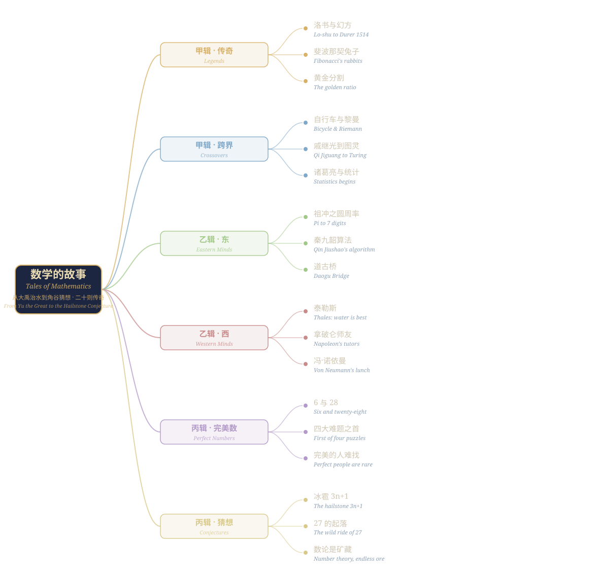

数学的故事
〇 · 书籍信息
基本信息
| 书名 | 《数学的故事》——序言开宗明义：「在人类所有的发明中，数学和诗歌无疑是最古老的」——数学可能诞生于游牧文明（牧羊人计算绵羊），诗歌出现在农耕文明之初：两者均源于生存的需要 |
|---|---|
| 缘起 | 诗人北岛 2016 年来杭州约稿：「我调研过了，你是全中国最适合写这本书的人」——最初属「给孩子」系列，出版时独立成书；期间作者同年的《数学简史》入选年度中华优秀科普图书榜、《数学传奇》获国家科学技术进步奖 |
| 结构 | 后记自陈三辑：甲辑 7 则（东西方传奇的交融：幻方、数字、斐波那契、黄金分割、自行车与黎曼、统计、密码）；乙辑 8 则（10 多位数学家，东西各半）；丙辑 5 则（历史悠久的数学问题与悬而未决的猜想） |
| 笔法 | 故事跨学科、跨文明：「数龄（学习数学的年份）不同的读者会有不同的收获」——涵盖数论代数、几何分析、概率统计、密码学与艺术学，插图多系作者旅行实地拍摄 |
| 一句话 | 这是一本把数学写成旅行文学的书：幻方从洛水游到纽伦堡，圆周率从建康算到计算机时代——而真正的主角，是那些把好奇心活成一生的人。 |
一 · 核心主题总览
这本数学文化随笔里的四组母题：① 幻方的东西旅行
甲辑的主线：大禹治水时洛水浮出神龟，龟背「洛书」是三行三列的纵横图（每行列对角线之和均为 15）——「今天的『图书』一词，或许也与『河图』和『洛书』有关」；克久拉霍耆那教寺庙的幻方每个小正方形四数之和均为 34；丢勒雕版画《忧郁Ⅰ》的四阶幻方，末行中间两数 15、14 合起来恰是画作诞生的年份 1514——「丢勒对幻方的构造已经游刃有余」。
② 数学家群像
乙辑东西各半：「第一个留名后世的数学家」泰勒斯以「水是最好的」闻名，用海绵治服了偷滚卸盐的骡子；祖冲之把圆周率精确到小数点后 7 位；秦九韶的中国剩余定理与秦九韶算法被作者判为「更有意义也更重要」；拿破仑 16 岁时由拉普拉斯单独主持毕业考试；冯·诺依曼 29 岁成为普林斯顿高等研究院最年轻的终身教授。
③ 悬而未决的猜想
丙辑的悬念：完美数（被视为奥迪弗雷迪所列未来四大数学难题之首）「能找出的完美数不会多，就好比人类，要找出一个完美的人亦非易事」；角谷猜想（冰雹猜想 / 3x+1 问题）「它的最大魅力在于其不可预测性」——数字 27 要先经 77 步到达峰顶 9232，再经 34 步回到 1；「或许有一天，全世界的黄金和钻石都会被挖掘殆尽，但数论却是取之不竭的珍宝」。
④ 数学与人文
全书的方法论：自行车与黎曼几何同章讲述（「自行车的发明，让乡村的小伙子们能够去遥远的村庄寻找他们心仪的女孩子」）；戚继光的反切码与图灵的炸弹机连成一条密码战线；诸葛亮草船借箭引出统计学；苏东坡的回文诗引出回文数——数学和诗歌，本来就是最古老的两样发明。
二 · 第一段 甲辑 —— 传奇的旅行—— 洛书 · 1514 · 兔子 · 黄金分割 ——
从洛书到丢勒
幻方是全书开场的故事：大禹治水时，孟津黄河中跃出驮图的神马（河图），洛宁洛河中浮出背有图案的神龟（洛书）——洛书的九宫纵横图每行、列及对角线之和均为 15，「既是科学的结晶，又是吉祥的象征」，连智能手机的九宫格拼音键盘都沿用了它。两千年后它在欧洲升华：丢勒 1514 年的雕版画《忧郁Ⅰ》右上角嵌着四阶幻方——每行列对角线之和均为 34，四个角落与中央五个小方阵的四数之和也是 34；末行中间的 15 和 14 合写恰是创作年份——「这可能是艺术作品中首次出现幻方，它助力此画成为一幅世界名画」。
◆ 语言学习 · 概念 · 幻方
| 洛书 | 三阶纵横图：1~9 排布使每行列对角线和均为 15 |
|---|---|
| 纵横图 / 九宫图 | 幻方的中国名字——「图书」一词的可能出处 |
| 四阶幻方 | 丢勒 1514：角、心、行、列、对角线皆 34 |
| 《忧郁Ⅰ》 | 艺术作品中首次出现的幻方——画因数而名 |
句型 ｜ 「今天的『图书』一词，或许也与『河图』和『洛书』有关。」——考据里的浪漫：一个词的词源里藏着一部数学史——词语的化石比文献活得更久。
数字、兔子与五角星
甲辑的中段是三个家喻户晓的故事：马可·波罗与阿拉伯数字的旅行（「零与印度数字」经巴格达智慧宫翻译时代西传）；斐波那契《算经》的兔子问题——每对大兔每月生一对小兔，一对小兔一年将有多少对？「斐波那契数列」由此得名，他还率先使用分数中间那条横线，「这个记号沿用至今」；黄金分割与五角星——希腊人发现的比值，至今仍是美术与建筑的隐语法。唐代的「百鸡问题」（公鸡母鸡雏鸡）与斐波那契的「30 钱买 30 只鸟」如出一辙——东西方的数学智慧总在隔着时空互相押韵。
◆ 语言学习 · 概念 · 兔子问题
| 斐波那契数列 | 1, 1, 2, 3, 5, 8…：兔子问题的答案序列 |
|---|---|
| 分数横线 | 斐波那契发明的记号——沿用至今 |
| 智慧宫 | 巴格达的翻译时代枢纽：印度数字西行的驿站 |
| 百鸡问题 | 《张丘建算经》名题——与斐波那契商业题同构 |
习语 ｜ 「东西方的数学智慧总在隔着时空互相押韵。」——甲辑的潜台词：没有哪家文明垄断了数学——百鸡与买鸟、洛书与幻方，是同一好奇心在不同河岸的回声。
自行车、密码与统计
甲辑后段最见跨界功力：自行车一章从《梨俱吠陀》的轮子讲到邓禄普充气轮胎，再自然滑入黎曼几何学——「1866 年清朝首个出洋考察团的 19 岁少年张德彝在游记《航海述奇》里首用『自行车』一词」，电报、螺丝、巧克力等译名也出自他手；密码一章从戚继光的反切码（两首诗词作密码本，5—25—2 可切出「敌」字）讲到恩尼格玛与图灵——「炸弹机」破译了德军九成以上的密报，山本五十六座机因此被截击。统计一章则以草船借箭开篇：「在抽象的意义下，一切科学都是数学；在理性的世界里，所有的判断都是统计学」（C. R. 劳）。
◆ 语言学习 · 概念 · 反切码
| 反切码 | 戚继光的汉字加密法：声母歌 + 韵母歌编号组合 |
|---|---|
| 恩尼格玛 | Enigma 谜语机：1918 年德国专利的电气密码机 |
| 炸弹机 bombe | 图灵改进的破译装置——破译九成以上德军密报 |
| 张德彝 | 「自行车」「电报」「巧克力」的中文命名者 |
句型 ｜ 「在理性的世界里，所有的判断都是统计学。」——C. R. 劳的判词：草船借箭是一场风险测算：诸葛亮赌的是概率与人心——统计从数据里读出未来，正如箭从雾里读出敌人。
三 · 第二段 乙辑 —— 数学家群像—— 泰勒斯 · 祖冲之 · 秦九韶 · 冯·诺依曼 ——
泰勒斯与祖冲之
泰勒斯是「第一个留名后世的数学家」：他创立米利都学派，「企图摆脱宗教，透过自然现象去寻求真理」；名言「水是最好的」——虽然后来被证明是错的，「但他敢于揭露大自然的本来面目，并建立起自己的思想体系，因此被公认为古希腊哲学的鼻祖」；他的海绵故事（让骡子驮海绵治服偷滚卸盐）是流传最早的「智者斗愚」段子。祖冲之一章从《畴人传》讲起：「畴人」是古代世代执掌天文历算之家——刘徽、祖冲之与祖暅给出球体积公式与精确到小数点后 7 位的圆周率；但作者下了一个冷静的判词：「这类工作就像体育比赛的纪录一样，是为了被人打破而存在的」——「南宋秦九韶的两项成就——中国剩余定理和秦九韶算法更有意义，也更重要。但圆周率的结论和故事无疑更易于被普通人了解，也更符合国人的英雄想象」。
◆ 语言学习 · 概念 · 畴人
| 畴人 | 世代相传执掌天文历算之学的家族——祖冲之父子的身份 |
|---|---|
| 米利都学派 | 泰勒斯创立：自然哲学的起点 |
| 水是最好的 | 泰勒斯名言——错得伟大的第一个本体论 |
| 《缀术》 | 祖冲之著作：收入唐代十部算经 |
句型 ｜ 「圆周率……就像体育比赛的纪录一样，是为了被人打破而存在的。」——全书最清醒的科学史观：纪录与定理的寿命不同：纪录等人打破，定理等人使用——秦九韶算法活在今天 RSA 密码里，而圆周率竞争随计算机失去意义。
秦九韶、拿破仑与冯·诺依曼
秦九韶一章从杭州的道古桥讲起：「这个造桥的道古不是别人，正是南宋大数学家、气象学家秦九韶」——桥与溪水消失之后，作者才开始了解它的来历：1977 年麻省理工的三位年轻人「利用欧拉定理和秦九韶的大衍求一术，提出了著名的 RSA 公开密钥密码体系」——南宋的数学活在了今天的每一次网络支付里。拿破仑一章是趣史：1785 年拉普拉斯被指定单独考试 16 岁的炮兵学员拿破仑——后来皇帝身边聚起拉格朗日、拉普拉斯式的数学家师友；冯·诺依曼一章的引语来自 fellow 匈牙利人维格纳：「不管一个人多么聪明，和他一起长大都一定会有挫折感」——他是普林斯顿最年轻的终身教授、最好的爆炸理论专家、第一颗原子弹的设计师，「电子计算机之父」，博弈论「至少影响了 11 位诺贝尔经济学奖得主的工作」。
◆ 语言学习 · 概念 · 大衍求一术
| 大衍求一术 | 秦九韶的解法——中国剩余定理的系统算法 |
|---|---|
| 秦九韶算法 | 多项式快速求值：今天的数值计算通用工具 |
| RSA | 1977 年问世的公开密钥体系：数学根基即大衍求一术 |
| 道古桥 | 杭州地名——秦九韶（字道古）的传世碑文 |
习语 ｜ 「不管一个人多么聪明，和他一起长大都一定会有挫折感。」——维格纳谈冯·诺依曼：天才的密度是一种压力：同龄人的挫折感不是嫉妒，是近距离丈量差距的必然结果——群像传记里最诚实的一句旁白。
四 · 第三段 丙辑 —— 悬而未决的猜想—— 完美数 · 狄多女王 · 冰雹 ——
完美数与狄多女王
完美数一章以一句感慨定调：「能找出的完美数不会多，就好比人类，要找出一个完美的人亦非易事」——完美数即真因子之和恰好等于自身的正整数：毕达哥拉斯最早求得 6 和 28；两千多年后它仍是奥迪弗雷迪所列「完美数问题、黎曼猜想、庞加莱猜想、P = NP」四大难题之首。狄多女王一章则从一则分遗产故事讲起：酋长临终要把 11 辆车按 1/2、1/4、1/6 分给三个女儿—— 11 不能被整除，埃及分数的故事就此展开：古埃及人只用单位分数（1/n）记数的智慧，与狄多女王用牛皮圈地建迦太基的传说互为注脚。
◆ 语言学习 · 概念 · 完美数
| 完美数 | 真因子之和等于自身：6、28、496、8128… |
|---|---|
| 单位分数 | 形如 1/n 的分数——古埃及人的记数习惯 |
| 狄多女王 | 用牛皮条圈出迦太基地基的传说——等周长问题的原型 |
| 四大难题 | 奥迪弗雷迪：完美数 · 黎曼 · 庞加莱 · P=NP |
句型 ｜ 「能找出的完美数不会多，就好比人类，要找出一个完美的人亦非易事。」——数论与人生的互文：完美是稀缺事件——正因稀缺，追逐本身才构成意义。
回文数与冰雹猜想
章首引数论学家莫德尔：「高等算术（数论）看起来囊括了数学的大部分罗曼史」——开篇即苏东坡的回文诗「赏花归去马如飞，去马如飞酒力微……」：12 世纪西湖上的文字游戏，与英文回文 Race car、法文 Amor Roma 遥相呼应。随后是全书最迷人的段落——冰雹猜想：任取一个自然数，偶数除以 2，奇数变成 3n+1——「这就是著名的『冰雹猜想』，它的最大魅力在于其不可预测性」：康威找到的 27 貌不惊人，却要经 77 步冲上峰顶 9232，再经 34 步落回 1，如冰雹上浮下沉；在中国它叫角谷猜想——提出者角谷静夫的女儿角谷美智子，正是《纽约时报》首席书评人。丙辑的最后是布丰投针与蒙特卡罗方法、堆球问题与开普勒猜想——「或许有一天，全世界的黄金和钻石都会被挖掘殆尽，但数论却是取之不竭的珍宝」。
◆ 语言学习 · 概念 · 冰雹猜想
| 3n+1 问题 | 偶减半、奇乘三加一：最终都回到 1？ |
|---|---|
| 冰雹猜想 | 数字如冰雹上浮下沉——不可预测性即魅力 |
| 回文数 | 正读反读相同的数——苏东坡回文诗的数学亲戚 |
| 蒙特卡罗 | 布丰投针的嫡系子孙：用随机数算确定值 |
习语 ｜ 「或许有一天，全世界的黄金和钻石都会被挖掘殆尽，但数论却是取之不竭的珍宝。」——丙辑的收束语：物质财富越挖越少，猜想越挖越多——数学是唯一越开采越富有的矿脉。
五 · 人物图鉴与成长弧线—— 主角配角 · 一张表看穿 ——
主要人物
蔡天新——作者与导游——浙江大学数学学院教授、诗人：把数学写成旅行文学的人——插图多系实地拍摄，「数龄不同的读者会有不同的收获」
余建春——序言里最动人的角色——河南打工青年，牧业专科毕业、未学过高等数学：手写信函里的数论结果震动学界——「数学虽然比较抽象，有时是无用的，却是大众关心的一门学科」的活证
北岛——这本书的催生者——「你是全中国最适合写这本书的人」：诗人约数学家写书，恰应了「数学和诗歌是最古老的两样发明」
丢勒——甲辑的艺术主角——把幻方藏进《忧郁Ⅰ》的版画家：1514 年份嵌入画中——「艺术作品中首次出现幻方」
次要人物（功能位）
| 泰勒斯 | 第一个留名的数学家——「水是最好的」：错得伟大的第一个本体论；用海绵治骡子的智者 |
|---|---|
| 祖冲之 | 畴人之家的圆周率——小数点后 7 位保持世界纪录千年：但「纪录是为了被人打破而存在的」 |
| 秦九韶 | 道古桥的建造者——中国剩余定理与秦九韶算法：1977 年 RSA 密码的南宋根基 |
| 图灵 | 密码战线的破译者——发现「A 无法加密成 A」的缺陷，炸弹机破译九成德军密报——丘吉尔盛赞「以如此少的兵力取得如此大的成功」 |
| 冯·诺依曼 | 最年轻的终身教授——29 岁入普林斯顿、原子弹设计师、电子计算机之父、博弈论奠基人 |
六 · 主题与象征—— 每个道具都在说话 ——
| 洛书 ↔ 幻方 | 吉祥的数学——从神龟背上的 15 到丢勒画里的 34：数字既是科学又是护符 |
|---|---|
| 兔子 ↔ 数列 | 增殖的谜题——一对小兔一年变出的不止是答案，是贯穿自然界的斐波那契语法 |
| 纪录 ↔ 定理 | 两种寿命——圆周率是纪录（等人打破），秦九韶算法是定理（等人使用）：科学史要分清这两种成就 |
| 冰雹 ↔ 27 | 不可预测之喻——77 步上浮 9232、34 步落回 1：简单规则生成混沌——猜想的魅力全在悬念 |
| 牛皮 ↔ 迦太基 | 狄多之圈——一根牛皮条圈出一座城：等周长问题是最早的「边界即命运」 |
七 · 写作手法赏析—— 怎么写，就能怎么学 ——
① 旅行文学笔法
实地插图与旅记穿插——底格里斯河、克久拉霍寺庙、淳风祠照片多系作者自拍：数学史被写成地理学的现场报道
② 东西对称结构
甲乙丙三辑东西各半——洛书对丢勒、百鸡对买鸟、祖冲之对斐波那契：文明互证而非单线叙事
③ 人文引语开章
每章以名家格言起笔——维格纳谈天才、C. R. 劳谈统计、婆罗摩笈多谈学者、莫德尔谈数论的罗曼史：先立意境再讲故事
④ 悬念收束
丙辑专设猜想章——完美数、角谷、堆球：把「尚未解决」当作邀请函——科普的最高形式是留下问题
⑤ 自陈三辑
后记交底——「甲辑是传奇，乙辑是群像，丙辑是难题」：结构清楚到可以直接当目录用
八 · 名段欣赏—— 原文精读 · 逐段赏析 ——
九 · 金句摘录—— 14 条 · 中英对照 · 带出处 ——
"在人类所有的发明中，数学和诗歌无疑是最古老的。"—— 序言
"可以说，学好数学是一桩幸福美好的事儿，学不好数学则是一桩痛苦莫名甚或悲惨的事儿。"—— 序言
"它也许可以帮助更多人了解和喜欢数学。"—— 序言
"洛书上有三行三列的纵横图，分别写着 1~9 这 9 个数字，每行、列及两条对角线上的三个数相加的结果相同，均为 15。"—— 甲辑 · 大禹治水和洛书
"这可能是艺术作品中首次出现幻方，它助力此画成为一幅世界名画。"—— 甲辑 · 画《忧郁》的丢勒
"自行车的发明，让乡村的小伙子们能够去遥远的村庄寻找他们心仪的女孩子。"—— 甲辑 · 自行车与黎曼几何学
"在抽象的意义下，一切科学都是数学；在理性的世界里，所有的判断都是统计学。"—— 乙辑 · 引 C. R. 劳
"水是最好的。"—— 乙辑 · 泰勒斯名言
"但他敢于揭露大自然的本来面目，并建立起自己的思想体系，因此被公认为古希腊哲学的鼻祖。"—— 乙辑 · 论泰勒斯
"这类工作就像体育比赛的纪录一样，是为了被人打破而存在的。"—— 乙辑 · 论圆周率
"不管一个人多么聪明，和他一起长大都一定会有挫折感。"—— 乙辑 · 引维格纳
"能找出的完美数不会多，就好比人类，要找出一个完美的人亦非易事。"—— 丙辑 · 完美数
"这就是著名的「冰雹猜想」，它的最大魅力在于其不可预测性。"—— 丙辑 · 回文数与角谷猜想
"或许有一天，全世界的黄金和钻石都会被挖掘殆尽，但数论却是取之不竭的珍宝。"—— 丙辑 · 回文数与角谷猜想
十 · 拓展阅读—— 原文 · 词条 · 译文 ——
十一 · 个人感悟与心得—— 三点心得 ——
三点感悟
① 好奇心比文凭更像入场券
余建春的启示：没学过高数的人也能得出数论结果——业余的兴趣若足够专注，同样能触到专业的边界：别让「我不是科班」成为放弃的借口。
② 分清纪录与定理再努力
圆周率与秦九韶算法的对照：追逐「被打破型」成就易生焦虑，沉淀「被使用型」能力才有复利——选择赛道时先问：我做的东西，是被打破的纪录，还是被使用的工具。
③ 给数学留一点罗曼史
洛书、1514、冰雹猜想：数学不只藏在考卷里——九宫格键盘、黄金分割的取景框、双位数的加减游戏，日常处处是它的入口：喜欢，是最好的老师。
读完这本《数学的故事》，最难忘记的其实是序言里那封信：一个打工青年用一支笔追上了千年数论的余韵——数学的故事从来不止于大师与定理，它发生在任何一颗不肯停下好奇心的人身上：这大概就是蔡天新说的「学好数学是一桩幸福美好的事儿」的真正含义。
十二 · 一页速查（复习用）
| 三辑结构 | 甲传奇 · 乙群像 · 丙难题：东西对称的数学地图 |
|---|---|
| 幻方之旅 | 洛书到丢勒 1514：数字既是科学又是护符 |
| 纪录与定理 | 圆周率等人打破，秦九韶算法等人使用 |
| 冰雹猜想 | 3n+1 的不可预测性：最简单的规则最深的谜 |
| 数学与诗 | 最古老的两样发明：好奇心是共同的入口 |
十三 · 全书思维导图—— 一图纵览 ——

一图纵览全书骨架 · 中英双语对照 · 手机端可左右滑动查看全图